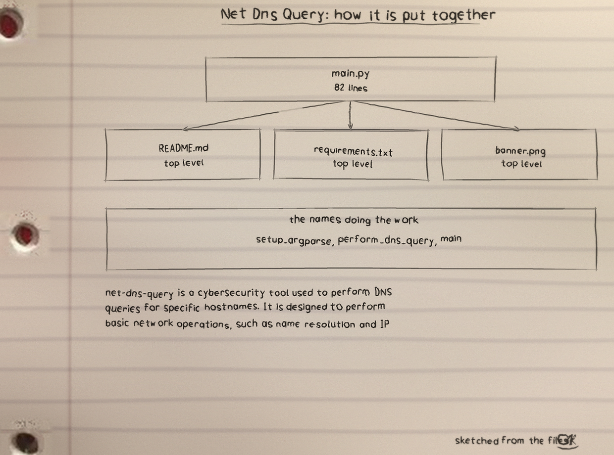
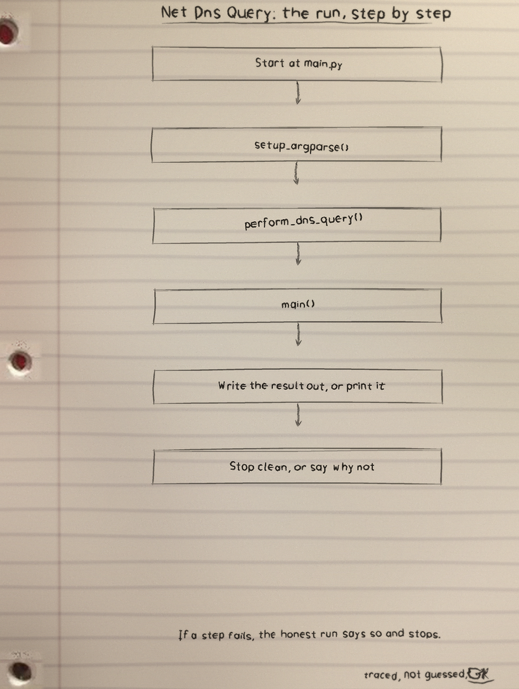
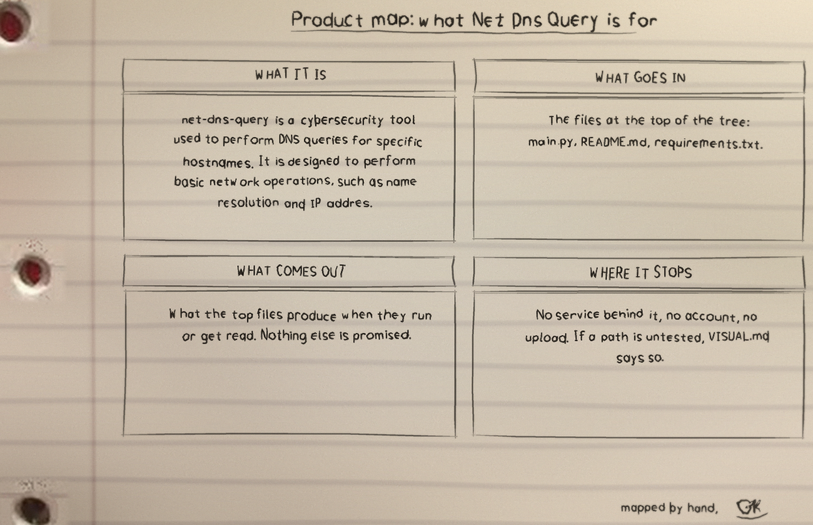

net-dns-query is a cybersecurity tool used to perform DNS queries for specific hostnames. It is designed to perform basic network operations, such as name resolution and IP address retrieval. The tool uses only the Python standard library. Without a server option it resolves hostnames with the syste
What it is
Net Dns Query: 21 files, 11907 counted lines across SVG 11540, Python 247, Markdown 119. One job, done in the open, in files you can read.
The biggest piece
net-dns-query-Visuals/schematic.svg carries the most
lines. If the project grows, that file is where the growth
lands first, for better or worse.
The honest gap
No test files yet. That is the honest gap, and the roadmap in the visuals folder says what the first one should cover.
Run it
The repo README has the exact commands for this one. The shape is the shape for most of my projects: clone it, read the top file first so you know what will happen, then run it on something you do not mind breaking.
$ git clone https://github.com/ShadowGuard-AI/net-dns-query.git
$ cd net-dns-query
The code, as it sits in the repo
From net-dns-query-Visuals/schematic.svg, line 1 on. I did
not tidy it for the page. What you see is what the file has.
<svg xmlns="http://www.w3.org/2000/svg" width="1240" height="920" viewBox="0 0 1240 920">
<defs><filter id="soft" x="-20%" y="-20%" width="140%" height="140%"><feGaussianBlur stdDeviation="7"/></filter>
<linearGradient id="edgeR" x1="0" y1="0" x2="1" y2="0"><stop offset="0" stop-color="#9aa4ae" stop-opacity="0"/><stop offset="1" stop-color="#9aa4ae" stop-opacity="0.35"/></linearGradient>
<linearGradient id="edgeB" x1="0" y1="0" x2="0" y2="1"><stop offset="0" stop-color="#9aa4ae" stop-opacity="0"/><stop offset="1" stop-color="#9aa4ae" stop-opacity="0.35"/></linearGradient></defs>
<rect width="1240" height="920" fill="#f4f6f8"/>
<path d="M 77 630 L 275 753" stroke="#8d97a1" stroke-width="22" stroke-opacity="0.047" filter="url(#soft)" fill="none"/>
<path d="M 68 644 L 267 767" stroke="#ffffff" stroke-width="12" stroke-opacity="0.037" filter="url(#soft)" fill="none"/>
<path d="M 59 176 L 393 187" stroke="#8d97a1" stroke-width="16" stroke-opacity="0.067" filter="url(#soft)" fill="none"/>
<path d="M 59 187 L 393 199" stroke="#ffffff" stroke-width="8" stroke-opacity="0.053" filter="url(#soft)" fill="none"/>
<path d="M 887 406 L 1020 715" stroke="#8d97a1" stroke-width="18" stroke-opacity="0.050" filter="url(#soft)" fill="none"/>
<path d="M 875 411 L 1008 720" stroke="#ffffff" stroke-width="10" stroke-opacity="0.040" filter="url(#soft)" fill="none"/>
<path d="M 434 335 L 264 481" stroke="#8d97a1" stroke-width="20" stroke-opacity="0.063" filter="url(#soft)" fill="none"/>
<path d="M 425 324 L 254 469" stroke="#ffffff" stroke-width="11" stroke-opacity="0.050" filter="url(#soft)" fill="none"/>
<path d="M 259 374 L 428 442" stroke="#8d97a1" stroke-width="15" stroke-opacity="0.080" filter="url(#soft)" fill="none"/>
<path d="M 255 385 L 424 452" stroke="#ffffff" stroke-width="8" stroke-opacity="0.063" filter="url(#soft)" fill="none"/>
<path d="M 217 692 L 238 1100" stroke="#8d97a1" stroke-width="40" stroke-opacity="0.059" filter="url(#soft)" fill="none"/>
<path d="M 188 694 L 208 1101" stroke="#ffffff" stroke-width="21" stroke-opacity="0.046" filter="url(#soft)" fill="none"/>
<path d="M 745 559 L 465 710" stroke="#8d97a1" stroke-width="40" stroke-opacity="0.092" filter="url(#soft)" fill="none"/>
<path d="M 731 534 L 451 685" stroke="#ffffff" stroke-width="21" stroke-opacity="0.073" filter="url(#soft)" fill="none"/>
<path d="M 1394 84 L 1055 190" stroke="#8d97a1" stroke-width="22" stroke-opacity="0.069" filter="url(#soft)" fill="none"/>
<path d="M 1389 68 L 1050 174" stroke="#ffffff" stroke-width="12" stroke-opacity="0.054" filter="url(#soft)" fill="none"/>
<path d="M 1086 352 L 760 537" stroke="#8d97a1" stroke-width="40" stroke-opacity="0.072" filter="url(#soft)" fill="none"/>The files that matter
| File | Lines |
|---|---|
net-dns-query-Visuals/schematic.svg | 3293 |
net-dns-query-Visuals/product-map.svg | 2524 |
net-dns-query-Visuals/architecture.svg | 2016 |
net-dns-query-Visuals/statistics.svg | 1496 |
net-dns-query-Visuals/flowchart.svg | 1256 |
net-dns-query-Visuals/data-flow.svg | 955 |
Names doing the work: setup_argparse, build_dns_query, parse_dns_name, format_rdata, parse_dns_response, query_dns_server, perform_dns_query, main.
Drawn by hand
I sketch my projects on notebook paper so I have to understand them well enough to draw them. The full set, with the counts and how they were counted, is the net-dns-query-Visuals folder in the repo. Nothing is drawn over the binder holes. That is a rule, not a style.


